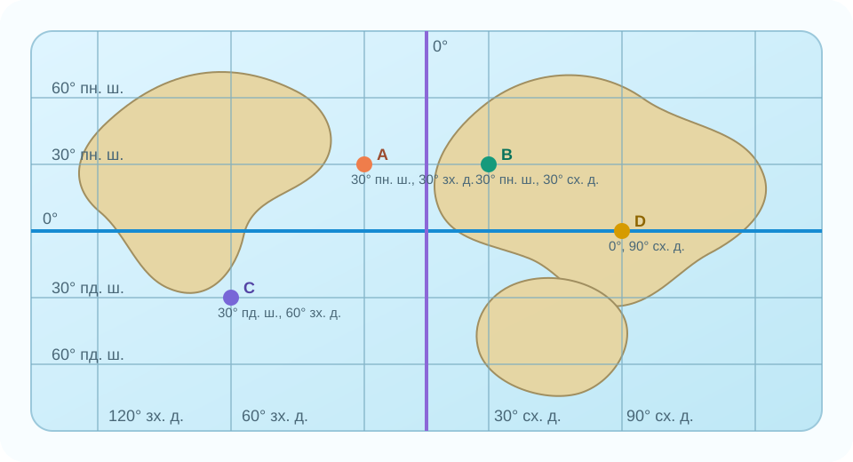
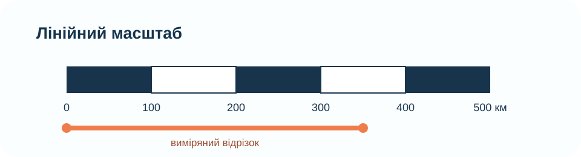

Правила роботи
Робота відкриється лише після введення прізвища, імені та класу.
Відповідайте послідовно. Після натискання «Здати роботу» з’явиться бал і розбір.
Карту та масштаб можна аналізувати. Готові відповіді чи пошук формул під час діагностики не використовуємо.
Вхід до діагностичної роботи
Діагностична робота — 10 завдань / 10 балів
У кожному завданні одна правильна відповідь. Працюйте з картою, обчисленнями та логікою.
Карта для завдань 4–6

Масштаб для завдання 7

Картографічне джерело для перевірки після роботи
Після здачі можна відкрити реальну карту й перевірити, як координати та відстані працюють у цифровому середовищі.
OpenStreetMap — реальні відкриті картографічні дані. Цей блок не містить готових відповідей до тесту.
Розбір після здачі
Що перевіряла робота
Класифікацію карт, генералізацію, паралелі й меридіани, координати, масштаб, відстані за градусною сіткою та вміння оцінювати похибку.
Як читати результат
9–10 — система працює впевнено; 7–8 — є окремі слабкі місця; 5–6 — потрібна адресна корекція; 0–4 — варто повернутися до алгоритмів координат і масштабу.
Післядіагностичний CER
Claim: Яка картографічна навичка у вас зараз найсильніша?
Evidence: Назвіть номер завдання або тип задачі, який це підтверджує.
Reasoning: Поясніть, чому саме цей результат є доказом, а не просто враженням.
Домашнє завдання
Після діагностики перегляньте помилки й повторіть лише ті алгоритми, де втратили бали. Підручник: Гільберг Т. Г., Довгань А. І., Совенко В. В. «Географія. 7 клас», 2024. Електронна версія — на офіційній сторінці видавництва «Генеза» або в електронній бібліотеці підручників ІМЗО.